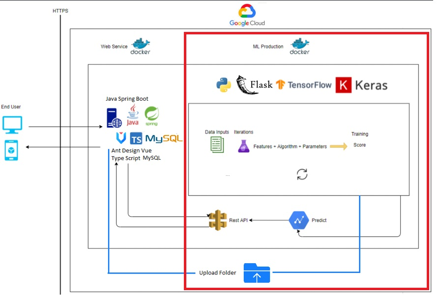

Welcome to Fruit Prediction Web Api’s documentation!¶
Fruit Prediction Web Api is a tool for predicting fruit type from image using deep learning(TensorFlow and Keras).
This tool provdes a standard restful api for prediction. It can also be used to train with new images.
This web api is called by blogapp (https://github.com/wdmhouston/capstone_project_blogapp) to predict any image uploaded through blogapp. Check blogapp for more details.
Please refer the following guide to deploy, test and train the model included in this tool.